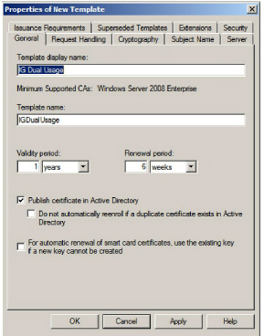
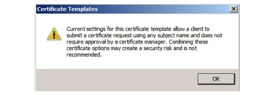
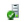

|
IdentityGuard Server 12.0 Administration Guide |
|
IdentityGuard Server 12.0 Administration Guide |
Complete both procedures in this section only if you are using a Microsoft CA.
You must create an IG Dual Usage certificate template on the Microsoft CA computer. The CA uses this template to generate user’s certificates (also known as digital IDs).
To create the IG Dual Usage certificate template
1. On your Microsoft CA computer, open Server Manager by clicking Start > Administrative Tools > Server Manager.
2. In the left navigation pane, expand Server Manager > Roles > Active Directory Certificate Services > Certificate Templates.
3. Create the IG Dual Usage certificate template, as follows:
a. In the main pane, right-click the User certificate template and select Duplicate Template from the pop-up menu.
b. Select Windows Server 2008 Enterprise and click OK. The Properties of New Template dialog box appears.
c. Under the General tab:
● For the Template display name, enter IG Dual Usage.

d. Under the Request Handling tab, set the Purpose to Signature and encryption.
e. Under the Cryptography tab, configure the following settings:
– Algorithm name – Set to RSA.
– Minimum key – Set size to 2048.
– Request hash – Set to SHA256.
f. Under the Subject Name tab, select Supply in request. (This action deselects the Build from this Active Directory information check box and underlying items.)
The Certificate Templates dialog box appears, warning of a potential security risk. In reality, there is no risk. Security is maintained, because an Entrust IdentityGuard will be requesting certificates for end-users. Click OK.

g. Under the Extensions tab, click Application Policies, and then click Edit.
h. Ensure that the following application policies are present, and if they are not, add them by clicking the Add button.
~ Any Purpose
~ Client Authentication
~ Document Signing
~ Encrypting File System
~ Secure Email
i. Click OK.
4. Click OK on all open dialog boxes.
To configure the CA to use the IG Dual Usage template
1. On your Microsoft CA computer, open Server Manager by clicking Start > Administrative Tools > Server Manager.
2. In the left navigation pane, expand Server Manager > Roles > Active Directory Certificate Services, and select your CA’s common name. It is this entry:

3. In the main pane, right-click Certificate Templates and select New > Certificate Template to Issue.
4. Select IG Dual Usage.
5. Click OK.
Your Microsoft CA now uses the IG Dual Usage template to issue user digital IDs.